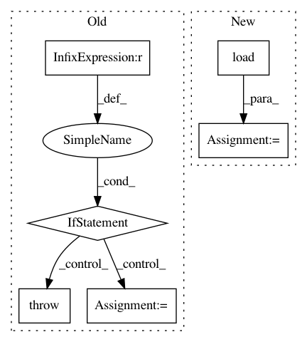

699ce9a0d6e19852f5d6171f86265b718bc860f8,python/src/nnabla/utils/nnp_graph.py,NnpLoader,__init__,#NnpLoader#Any#Any#Any#,458
Before Change
else:
ext = extension
if ext == ".nnp":
// Load parameters to self._params rather than
// loading to global current scope.
with nn.parameter_scope("", self._params):
proto = _load_nnp_to_proto(filepath)
elif ext in (".nntxt", ".prototxt"):
proto = _load_nntxt_to_proto(filepath)
else:
raise NotImplementedError(
"Currently extension of file for loading must be [".nnp", ".nntxt"]")
self.proto = proto
self.network_dict = {
network.name: network for network in proto.network}
After Change
// The loaded parameters will be copied to the current
// scope when get_network is called.
self._params = scope if scope else OrderedDict()
self.g = nn.graph_def.load(
filepath, parameter_scope=self._params, rng=np.random.RandomState(1223), extension=extension)
self.network_dict = {
name: pn for name, pn in self.g.networks.items()
}
In pattern: SUPERPATTERN
Frequency: 3
Non-data size: 6
Instances
Project Name: sony/nnabla
Commit Name: 699ce9a0d6e19852f5d6171f86265b718bc860f8
Time: 2021-03-01
Author: woody.li@sony.com
File Name: python/src/nnabla/utils/nnp_graph.py
Class Name: NnpLoader
Method Name: __init__
Project Name: allenai/allennlp
Commit Name: bd12252818e4376a52a28b8defa19ac090d927dd
Time: 2017-08-18
Author: joelgrus@gmail.com
File Name: allennlp/commands/evaluate.py
Class Name:
Method Name: evaluate_from_args
Project Name: vatlab/SoS
Commit Name: b3192bf244120efa901cc9c46fe36fb6fb501803
Time: 2016-11-19
Author: ben.bog@gmail.com
File Name: sos/__main__.py
Class Name:
Method Name: cmd_run